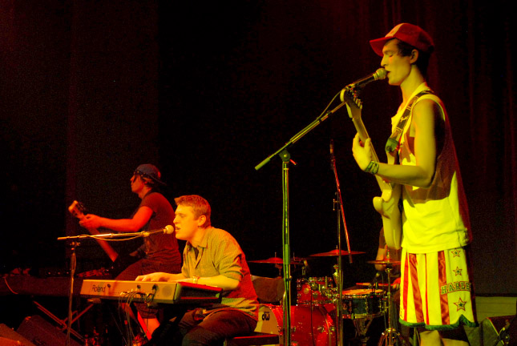
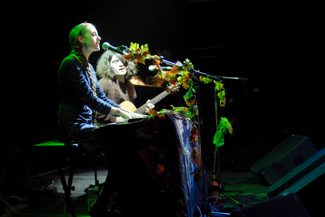
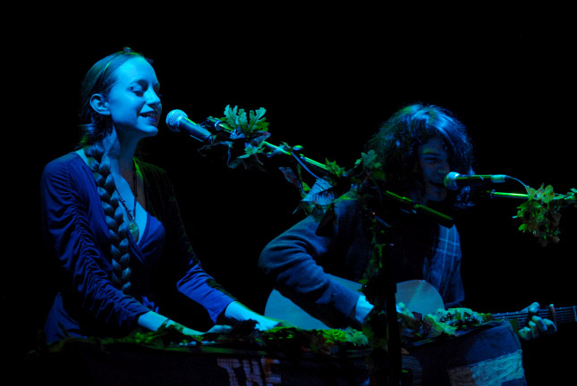
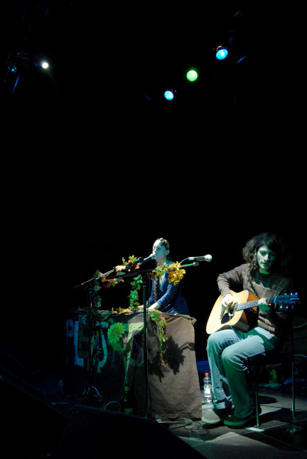
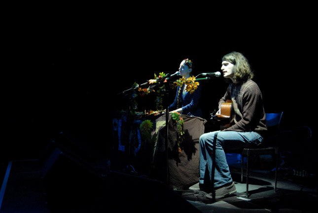
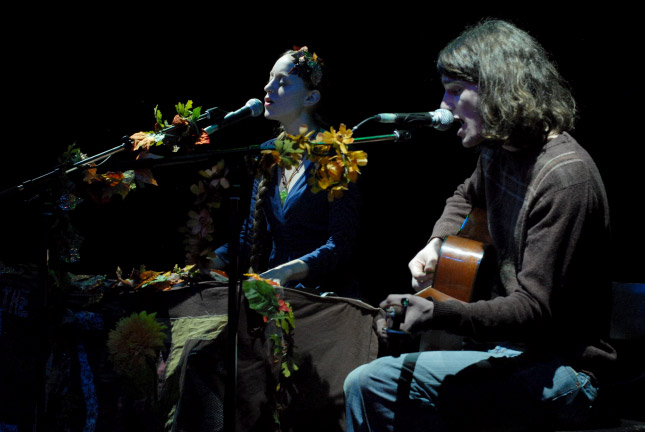
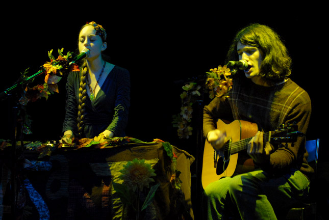
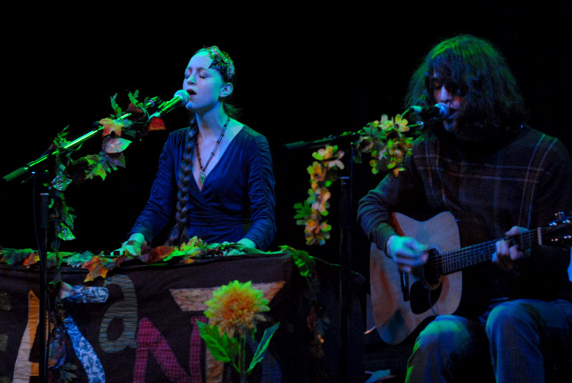
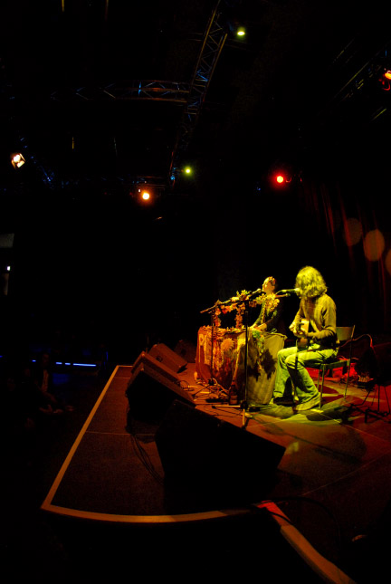
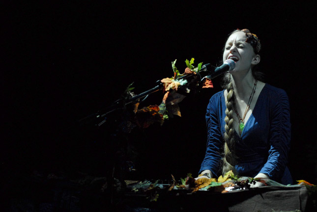

Big Orange Crayonmusical thingsPeach Harmonics, Waste*, and The Pleasants Kranhalle, Munich, Germany December 10th, 2010 Well, this was unexpected! I just happened to be looking at some concert listings and saw Amanda Rogers on there (in the Pleasants). The last time I saw Amanda was almost eight years ago, back in the US. I saw her a few times before that, the first was with Onelinedrawing almost ten years ago. And there she is in my new home across the sea. I'm awed by at least three things simultaneously right now: how fast time moved on, how people grow and change, and how people can grow and change and still have the same spark that you saw back then. So yeah, deeply amazing show, and the Pleasants remain awesome people. *I usually link to bands here, but in this case Google was unhelpful. Peach Harmonics          Please don't use these elsewhere unless you are in one of the bands or are a nice person. If you would like larger versions of any of them, just write and ask and I'll send them to you (unless you want a million different ones, in which case I might be too lazy). |